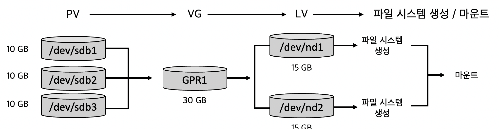

LVM
LVM
- LVM은 독립적으로 구성된 디스크 파티션을 하나로 연결하여
한 파티션처럼사용할 수 있도록 해준다.- PV(physical volume, 물리 볼륨): /dev/sdb1, /dev/sdb2 같은 실제 물리 디스크의 파티션
- VG(volume group, 볼륨 그룹): 여러 개의 PV를 그룹으로 묶은 것을 말한다.
예: /dev/sdb1, /dev/sdb2가 GRP1이라는 그룹을 만들 때 GRP1을 VG라고 한다. - LV(logical volume, 논리 볼륨): VG를 다시 적절한 크기의 파티션으로 나눌 때, 각 파티션을 LV라고 함
- PE(physical extent): PV가 가진 일정한 블록을 의미
- LE(logical extent): LV가 가진 일정한 블록을 의미

- 물리 파티션(PV) 세 개를 묶어 VG 하나를 만들고, 다시 LV 두 개로 분리.
LV에 파일 시스템 생성 후 마운트
LVM 명령
| 구분 | 기능 | 명령 |
| PV | PV 생성 | pvcreate [파티션 이름] |
| PV | PV 상태 확인 | pvscan |
| VG | VG 생성 | vgcreate [VG 명] [PV 명1] [PV 명2] … |
| VG | VG 활성화 | vgchange -a y [VG 명] |
| VG | VG 비활성화 | vgchange -a n [VG 명] |
| VG | VG 삭제 | vgremove [VG 명] |
| VG | VG 정보 확인 | vgdisplay -v [VG 명] |
| VG | VG에 PV 추가 | vgextend [VG 명] [PV 명] |
| VG | VG에 PV 삭제 | vgreduce [VG 명] [PV 명] |
| VG | VG명 변경 | vgrename [기존 VG 명] [새로운 VG 명] |
| LV | LV 생성 | lvcreate -l [PE 수] [VG 명] -n [LV 명] |
| LV | LV 삭제 | lvremove [LV 명] |
| LV | LV 상태 확인 | lvscan |
| LV | LV 용량 확대 | lvextent -l [+PE 수] [LV 명] |
| LV | LV 용량 축소 | lvextent -l [-PE 수] [LV 명] |
LVM 생성하기
- 기존 파일 시스템을 LVM으로 만드는 과정
- /dev/sdb1, /dev/sdb2는 각 500MB인데 이를 LVM으로 1GB 짜리 LV를 생성하여 마운트 해보자.
- /dev/sdb1, /dev/sdb2는 각 500MB인데 이를 LVM으로 1GB 짜리 LV를 생성하여 마운트 해보자.
- lvm2 패키지를 우선 설치한다.
$ sudo apt install lvm2
- /dev/sdb1, /dev/sdb2의 파일 시스템을 83(Linux)에서 8e(Linux LVM)으로 변경
- fdisk -> 내부 명령 t -> w로 저장
$ sudo fdisk /dev/sdb
Command (m for help): p # 한번 정보부터 보자
Disk /dev/sdb: 1073 MB, 1073741824 bytes
255 heads, 63 sectors/track, 130 cylinders, total 2097152 sectors
Units = sectors of 1 * 512 = 512 bytes
Sector size (logical/physical): 512 bytes / 512 bytes
I/O size (minimum/optimal): 512 bytes / 512 bytes
Disk identifier: 0x2fa4c807
Device Boot Start End Blocks Id System
/dev/sdb1 2048 1026047 512000 83 Linux
/dev/sdb2 1026048 2050047 512000 83 Linux
Command (m for help): t # 내부 명령 t
Partition number (1-4): 1 # 파티션 1(sdb1) 선택
Hex code (type L to list codes): 8e # 파일 시스템을 83(Linux) -> 8e(Linux LVM)
Changed system type of partition 1 to 8e (Linux LVM)
Command (m for help): t # 내부 명령 t
Partition number (1-4): 2 # 파티션 2(sdb2) 선택
Hex code (type L to list codes): 8e # 파일 시스템을 83(Linux) -> 8e(Linux LVM)
Changed system type of partition 1 to 8e (Linux LVM)
Command (m for help): p # 다시 정보 조회
Disk /dev/sdb: 1073 MB, 1073741824 bytes
255 heads, 63 sectors/track, 130 cylinders, total 2097152 sectors
Units = sectors of 1 * 512 = 512 bytes
Sector size (logical/physical): 512 bytes / 512 bytes
I/O size (minimum/optimal): 512 bytes / 512 bytes
Disk identifier: 0x2fa4c807
Device Boot Start End Blocks Id System
/dev/sdb1 2048 1026047 512000 8e Linux LVM # 파일 시스템 LVM 변경 확인
/dev/sdb2 1026048 2050047 512000 83 Linux LVM # 파일 시스템 LVM 변경 확인
Command (m for help): w # w 명령을 줘야 저장됨
The partition table has been altered!
Calling ioctl() to re-read paritition table.
Syncing disks.
$
- /dev/sdb1, /dev/sdb2에 PV를 생성한다.
$ sudo pvcreate /dev/sdb1
Physical volume "/dev/sdb2" successfully created
$ sudo pvcreate /dev/sdb2
Physical volume "/dev/sdb2" successfully created
#
- pvscan 명령으로 PV의 상태 확인
$ sudo pvscan
PV /dev/sdb1 lvm2 [500.00 MiB]
PV /dev/sdb2 lvm2 [500.00 MiB]
Total: 2 [1000.00 MiB] / in use: 0 [0 ] / in no VG: 2 [1000.00 MiB]
$
- 두 PV를 통합하여 VG를 생성한다. VG의 이름은 grp1로 한다.
$ sudo vgcreate grp1 /dev/sdb1 /dev/sdb2
Volume group *grp1* successfully created
$
- 생성된 VG grp1을 활성화한다.
$ sudo vgchange -a y grp1
0 logical volume(s) in volume group *grp1* now active
$
- 활성화된 VG grp1의 상태를 vgdisplay명령으로 확인
$ sudo vgdisplay -v grp1
Using volume group(s) on command line
Finding volume group *grp1*
-- Volume group --
VG Name grp1
System ID
Format lvm2
Metadata Areas 2
Metadata Sequence No 1
VG Access read/write
VG Status resizable
MAX LV 0
Cur LV 0
Open LV 0
Max PV 0
Cur PV 2
Act PV 2
VG Size 992.00 MiB
PE Size 4.00 MiB
Total PE 248
Alloc PE / Size 0 / 0
Free PE / Size 248 /992.00 MiB
VG UUID C2ezGa-rtX5-pUES-pczS-PVTA-tswP-Ff1MYc
--- Physical volumes ---
PV Name /dev/sdb1
PV UUID LlfbHM-i35S-RA0t-ZKUa-bMHY-yIj7-hz01x0
PV Status allocatable
Total PE / Free PE 124 / 124
PV Name /dev/sdb2
PV UUID h1Vt26-2QPO-fAbi-ABpR-s20x-6R63-2oPbEx
PV Status allocatable
Total PE / Free PE 124 / 124
$
- VG grp1 에는 PE가 총 248개 있다. 이를 모두 합하여 하나의 LV를 생성한다.
$ sudo lvcreate -l 248 grp1 -n mylvm1
Logical volume "mylvm1" created
$
- 생성된 LV의 상태를 확인해보면 ACTIVE임을 알 수 있다.
$ sudo lvscan
ACTIVE '/dev/grp1/mylvm1' [992.00 MiB] inherit
$
- LV mylvm1에 ext4 파일 시스템을 생성한다.
- 위에서 확인한 LV의 장치명이 /dev/grp1/mylvm1로 되어 있음을 주의한다.
$ sudo mke2fs -t ext4 /dev/grp1/mylvm1
mke2fs 1.42.8 (20-Jun-2013)
Filesystem label=
OS type: Linux
Block size=4096 (log=2)
Fragment size=4096 (log=2)
Stride=0 blocks, Stripe width=0 blocks
63488 inodes, 253952 blocks
12697 blocks (5.00%) reserved for the super user
First data block=0
Maximum filesystem blocks=260046848
8 block groups
32768 blocks per group, 32768 fragments per group
7936 inodes per group
Superblock backups stored on blocks:
32768, 98304, 163840, 229376
Allocating group tables: done
Writing inode tables: done
Creating journal (4096 blocks):
done
Writing superblocks and filesystem accounting information: done
$
- VG의 상태를 확인하여 LV의 정보가 수정되었는지 확인한다.
$ sudo vgdisplay -v grp1
Using volume group(s) on command line
Finding volume group "grp1"
--- Volume group ---
(생략)
--- Logical volume ---
LV Path /dev/grp1/mylvm1
LV Name mylvm1
VG Name grp1
LV UUID m7ypbD-4PZZ-c8zl-Ftrz-Yv1T-dB04-szjKEI
LV Write Access read/write
LV Creation host, time myubuntu, 2014-03-10 00:55:53 +0900
LV Status available
# open 0
LV Size 992.00 MiB
Current LE 248
Segments 2
Allocation inherit
Read ahead sectors auto
- currently set to 256
Block device 252:0
--- Physical volumes ---
(생략)
$
- LV를 /mnt/lvm 디렉터리에 마운트하고 파일을 복사해본다.
$ sudo mkdir /mnt/lvm
$ sudo mount /dev/grp1/mylvm1 /mnt/lvm
$ sudo cp /etc/hosts /mnt/lvm
$ ls /mnt/lvm
hosts lost+found
$